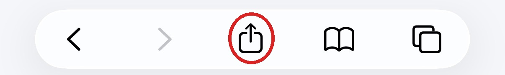
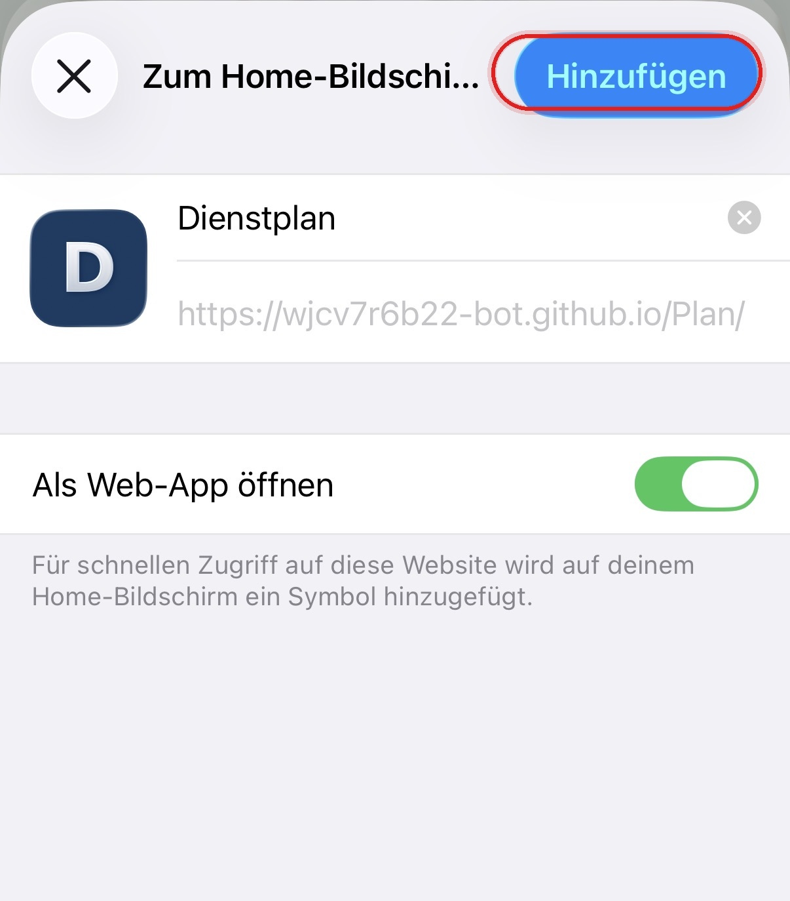

Teilen-Symbol antippen
Öffne diese Seite in Safari und tippe unten auf das Teilen-Symbol.

Dienstgruppen Anton bis Emil
Installiere den Dienstplan einmal auf deinem Smartphone. Danach öffnest du ihn über das blaue D wie eine normale App.
Installation mit Safari
Öffne diese Seite in Safari und tippe unten auf das Teilen-Symbol.

Scrolle im Teilen-Menü nach unten und tippe auf „Zum Home-Bildschirm“.
Nach der Auswahl öffnet sich die Vorschau für die Web-App.
Tippe oben rechts auf „Hinzufügen“. Danach erscheint das blaue D auf deinem Home-Bildschirm.

Installation mit Google Chrome
Öffne diese Seite in Google Chrome und tippe oben rechts auf das Drei-Punkte-Menü ⋮.
Tippe auf „App installieren“. Je nach Gerät kann der Punkt auch „Zum Startbildschirm hinzufügen“ heißen.
Bestätige mit „Installieren“ oder „Hinzufügen“. Danach findest du das blaue D auf deinem Startbildschirm.
Öffne den Dienstplan anschließend über das blaue D auf deinem Home- bzw. Startbildschirm.
Dienste und freie Tage im gewählten Jahr.